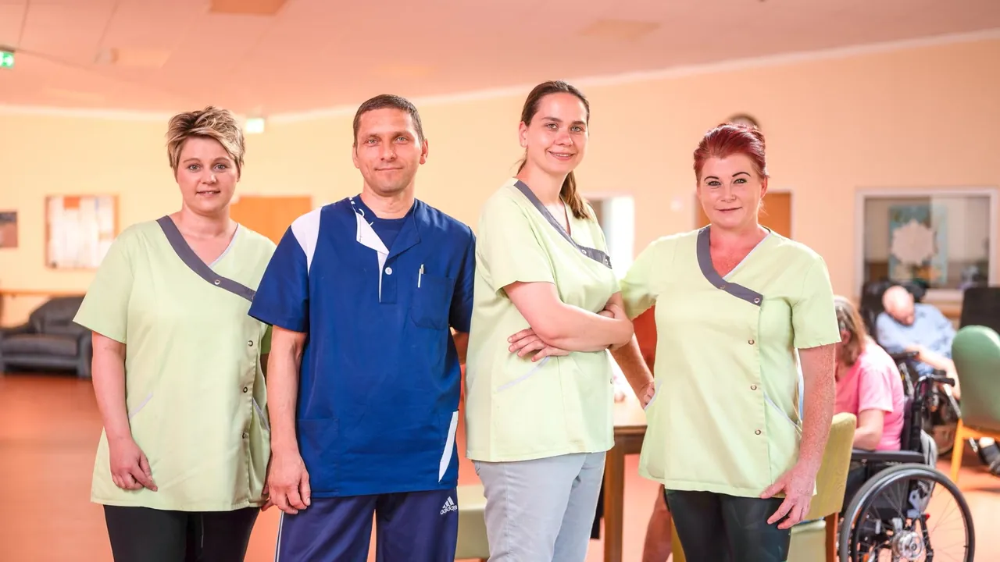
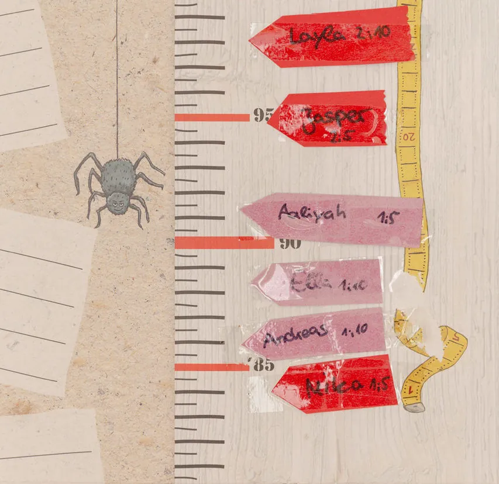
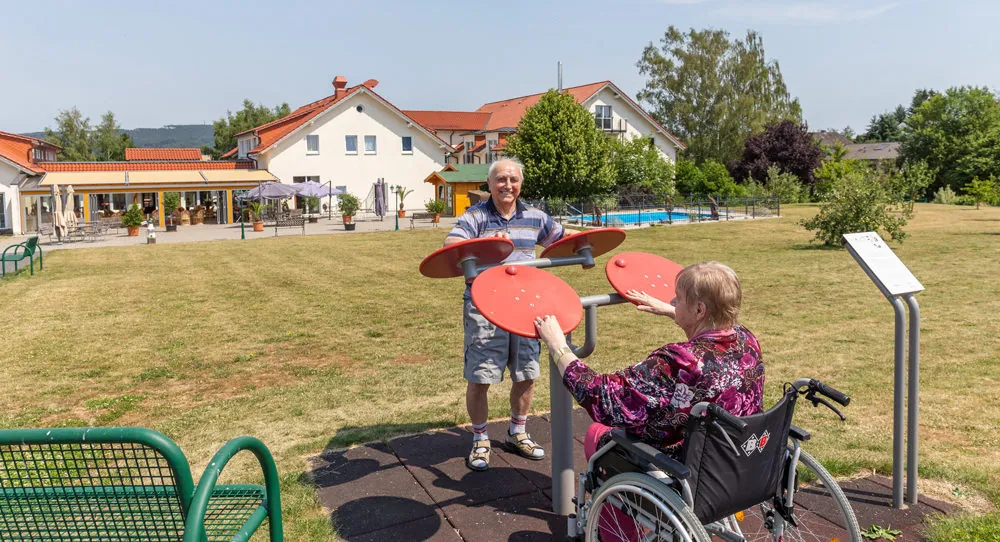
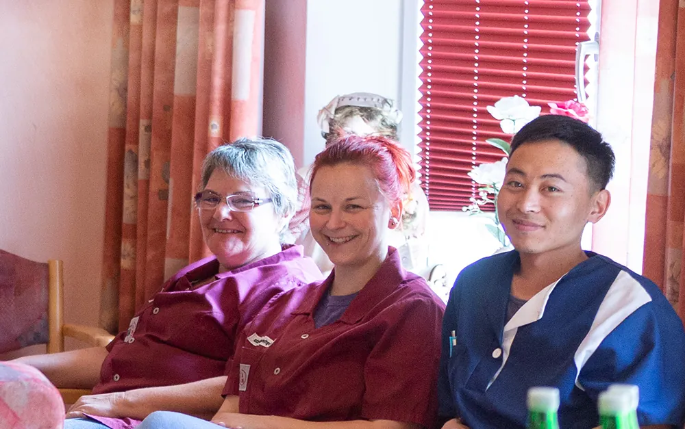
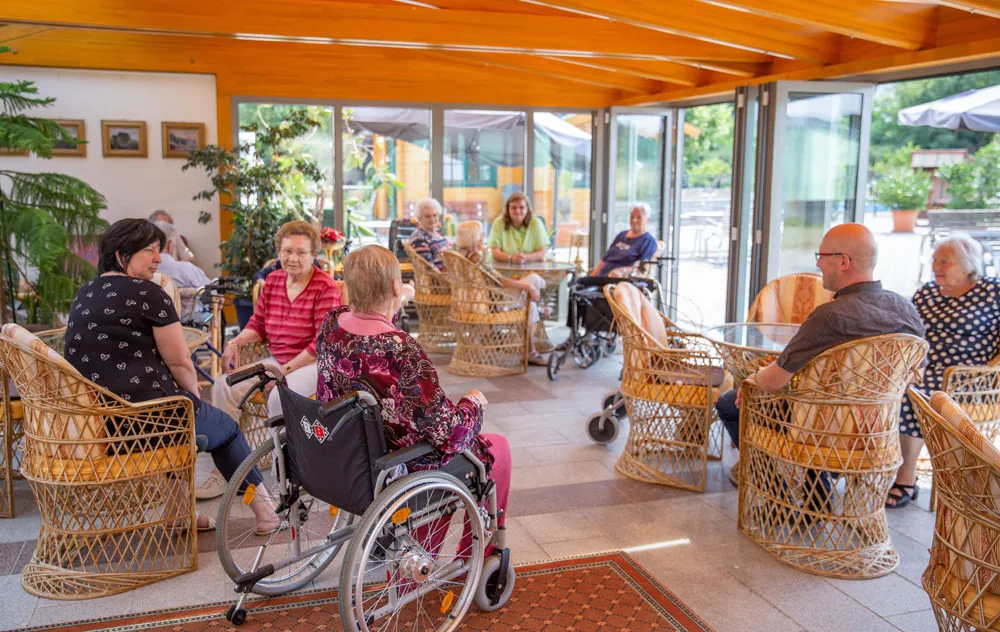
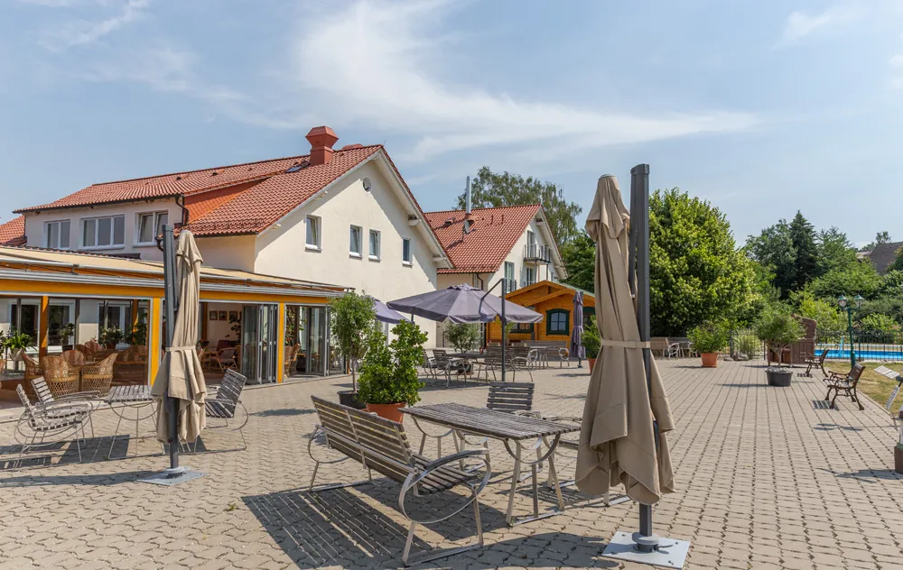
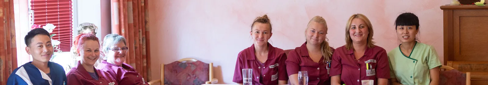
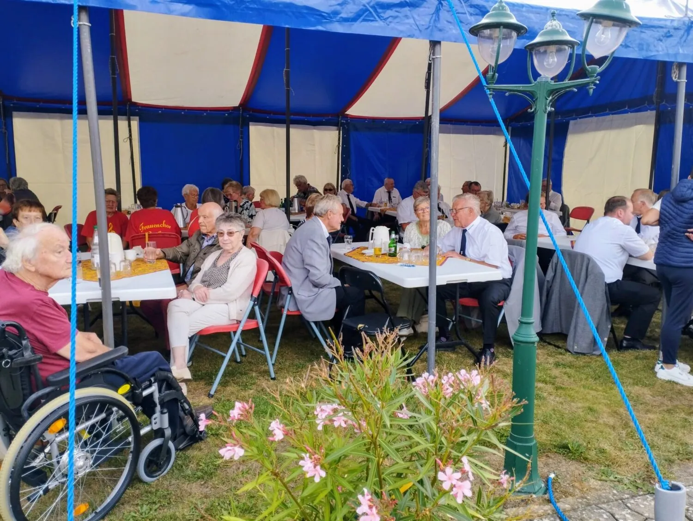
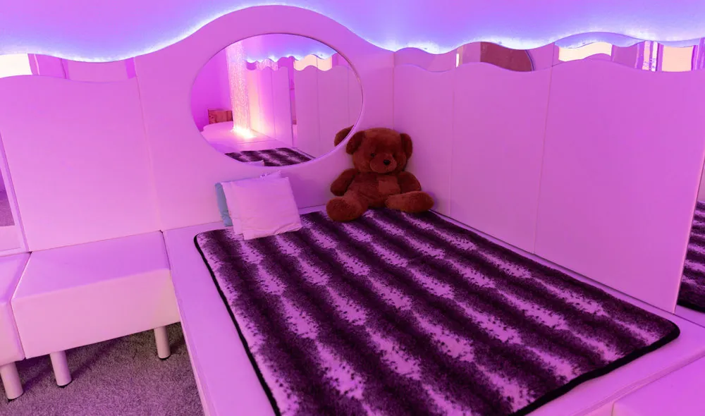

Wie gut lässt sich Arbeit mit Familie verbinden?
Mit der eigenen Kinderkrippe möchte Auetal Familien im Pflegealltag unterstützen. Ob Plätze verfügbar sind, welche Zeiten gelten und ob Kosten entstehen, klären wir persönlich.

Pflegefachkräfte (m/w/d) · Kalefeld-Echte
Du bist examinierte Pflegefachkraft oder möchtest nach einer Pause zurück in den Beruf? Entdecke Auetal: ein familiengeführtes Haus, echte Unterstützung im Alltag und Menschen, die dich persönlich kennenlernen möchten.
Wie fühlt es sich an, wenn Kolleginnen und Kollegen sich unterstützen und Menschen als Menschen gesehen werden? Finde heraus, wie wir bei Auetal arbeiten und ob du dich hier wohlfühlen könntest.
Was müsste sich verändern?
Mit der eigenen Kinderkrippe möchte Auetal Familien im Pflegealltag unterstützen. Ob Plätze verfügbar sind, welche Zeiten gelten und ob Kosten entstehen, klären wir persönlich.
Im Haus Clausberg arbeiten Pflege und Service zusammen. Elektronische Dokumentation soll zusätzlich den Verwaltungsaufwand reduzieren – damit mehr Raum für die Menschen bleibt.
Probearbeiten ist ausdrücklich möglich. Erst kennenlernen, dann entscheiden.
Dein Wechselgrund zählt zuerst
Du hast dich für die Pflege entschieden, um Menschen zu begleiten. Hier erfährst du, wie du deine Erfahrung im Auetal einbringen kannst – und was wir für deinen Arbeitsalltag tun.

Auetal hat eine eigene Kinderkrippe für kleine Kinder. Verfügbarkeit, Betreuungszeiten und mögliche Kosten besprechen wir persönlich.



Nicht nur was du bekommst. Wie es sich anfühlen kann.
Als Pflegefachkraft zählt für dich nicht nur der Dienstplan. Du willst Menschen gut begleiten und gleichzeitig wissen, dass dein eigener Alltag ernst genommen wird.
Im Haus Clausberg leben jeweils etwa 10 bis 12 Bewohner in einer Wohngruppe. Das Pro-8-Konzept und die Zusammenarbeit zwischen Pflege und Service prägen den Alltag.
Fortbildungen, Seminare und berufsbegleitende Entwicklung werden von Auetal ausdrücklich unterstützt.
Auetal hat die eigene Kinderkrippe Krabbelkäfer direkt beim Arbeitgeber. Ob ein Platz frei ist, zu welchen Zeiten und zu welchen Kosten, besprechen wir persönlich.
Ein Gespräch und eine mögliche Hospitation helfen dir, Team und Pflegealltag kennenzulernen – bevor du eine Entscheidung treffen musst.
Benefits, die im Leben ankommen
Was hilft dir als examinierte Pflegefachkraft wirklich? Hier findest du Vorteile, die deinen Arbeitsalltag und dein Leben außerhalb der Pflege unterstützen können.
Auetal hat eine eigene Kinderkrippe. Ob gerade ein Platz verfügbar ist, welche Zeiten passen und welche Kosten entstehen können, klären wir gemeinsam.
Auetal-Antwort: Eigene Kinderkrippe – Details und Verfügbarkeit im Gespräch.Gute Arbeit verdient faire Bedingungen. Wie Vergütung, Urlaub und mögliche Zuschläge für deine Stelle genau aussehen, besprechen wir mit dir transparent und persönlich.
Im Haus gibt es echte Rückzugsorte: den Pool, den Mitarbeiter-Ruheraum und den Snoozle-Raum, den du auch in deiner Pause nutzen darfst. Die konkreten Nutzungszeiten klären wir im Gespräch.
Hier gibt es echte Orte, an denen du zwischen anspruchsvollen Diensten durchatmen kannst.Du möchtest nach deiner Ausbildung fachlich weiterkommen? Auetal unterstützt Fortbildungen und Entwicklungsmöglichkeiten. Welche Qualifikationen und Schwerpunkte zu dir passen, besprechen wir persönlich.
Deine Erfahrung zählt. Und du sollst die Möglichkeit haben, Neues dazuzulernen.Auetal setzt auf elektronische Dokumentation, damit weniger Zeit in Papierkram fließt und mehr bei den Menschen bleibt.
Weniger Zeit für Dokumentation, mehr Raum für den Menschen – daran arbeiten wir.Du kannst Auetal erst kennenlernen und eine Hospitation besprechen, bevor du dich für einen Wechsel entscheidest.
In 60 Sekunden kennenlernen ↓Ehrlich statt schönreden
Pflege ist anspruchsvoll. Wir versprechen nicht, dass jeder Dienst leicht ist – aber wir zeigen dir, welche Bedingungen und Möglichkeiten du bei uns wirklich vorfindest.
Was für dich wirklich passt, klären wir im persönlichen Gespräch – offen und ohne Druck.
Unsere Geschichte · Bis heute familiengeführt
Unsere Geschichte begann in einem umgebauten Wohnhaus. Heute sind wir ein familiengeführtes Seniorenheim in Echte. Vieles hat sich verändert. Aber das Wichtigste ist geblieben: Bei uns geht es zuerst um Menschen. Auch um dich.
Damals machte unsere Familie aus einem privaten Wohnhaus einen Ort für bis zu 25 ältere Menschen. 2002 kauften wir in Echte eine ehemalige Grundschule. Nach dem Umbau wurde sie 2003 zu einem neuen Zuhause für Menschen, die Unterstützung brauchen.
Wir hatten bereits die Möglichkeit, das Seniorenheim zu attraktiven Bedingungen zu verkaufen. Wir haben uns dagegen entschieden. Nicht, weil Pflege einfach wäre. Sondern weil Auetal für uns mehr ist als ein Unternehmen: ein Stück Familiengeschichte und Verantwortung gegenüber unserem Team und unseren Bewohnern.
Du hast deinen Beruf nicht gewählt, um nur noch zu funktionieren. Du möchtest Menschen begleiten, ihnen zuhören und gute Pflege leisten. Wir können dir nicht versprechen, dass jeder Dienst leicht wird. Aber wir möchten dich als Menschen sehen – nicht nur als jemanden, der eine Schicht übernimmt.

Familiengeführt · Mit persönlicher Verantwortung Du kümmerst dich um andere Menschen. Wir möchten, dass auch du dich gut aufgehoben fühlst.
Auetal erleben · Unser Arbeitgeberfilm
Was Auetal besonders macht, lässt sich nicht allein in Worte fassen. Nimm dir einen Moment und lerne unsere Arbeitgeberwelt im Film kennen.
Die Menschen, mit denen du arbeiten könntest
Wer einen neuen Arbeitsplatz sucht, möchte zuerst die Menschen und das Miteinander kennenlernen. Hier bekommst du erste Originaleinblicke aus Auetal. Alles Weitere zeigen wir dir am liebsten persönlich.

Pflege beginnt damit, Menschen wirklich wahrzunehmen.
Bei einem persönlichen Kennenlernen kannst du Fragen zum Team, zu den Häusern und zu den Abläufen direkt stellen – und selbst spüren, wie hier gearbeitet wird.

Miteinander entsteht nicht in einer Stellenanzeige.
Sommerfest 2025 im Auetal: Solche gemeinsamen Momente gehören ebenso zum Haus wie die tägliche Arbeit.
Echte Orte, echte Pausen
Ein Wasserbett, sanftes Licht, ein ganz besonderer Rückzugsort: Im Haus Clausberg gibt es einen Snoozle-Raum. Er ist vor allem für Bewohnerinnen und Bewohner da – und darf laut Auetal auch von Mitarbeitenden in ihrer Pause zum Krafttanken genutzt werden.
Auetal nennt außerdem einen eigenen Mitarbeiter-Ruheraum, eine Infrarotsauna, Schwimmbadnutzung und einen Therapieraum als Angebote zur Erholung. Das sind keine austauschbaren Wellness-Versprechen, sondern Orte, die es hier wirklich gibt.

Die Bilder zeigen den Snoozle-Raum und nicht den separaten Mitarbeiter-Ruheraum. Die aktuellen Nutzungsbedingungen der Angebote werden im persönlichen Gespräch geklärt.
Aktuell gesucht
Unsere priorisierten Stellen für examinierte Pflegefachkräfte: Haus Clausberg im Tag- oder Nachtdienst und Haus Herrenwiese im Tagdienst. Auch über einen Wiedereinstieg können wir sprechen.
Haus Clausberg · Tagdienst · Vollzeit · Demenzpflege
Haus Clausberg · Nachtdienst · gerontopsychiatrische Qualifikation willkommen, nicht Voraussetzung
Haus Herrenwiese · Tagdienst · Vollzeit oder Teilzeit
Du bist examiniert und möchtest nach einer Pause zurück? Lass uns über deinen Einstieg sprechen.
Du bist examiniert und suchst ein anderes Arbeitsmodell? Wir sprechen gern über Möglichkeiten.
In 60 Sekunden kennenlernen
Vier kurze Fragen, dann deine Telefonnummer oder E-Mail. Mehr brauchen wir nicht. Wir melden uns persönlich bei dir.
Noch unsicher?
Dein Ansprechpartner für erste Fragen ist Frank Denecke. Du brauchst für ein unverbindliches Gespräch keinen fertigen Lebenslauf. Ein persönlicher Besuch und eine Hospitation sind auf Wunsch möglich.